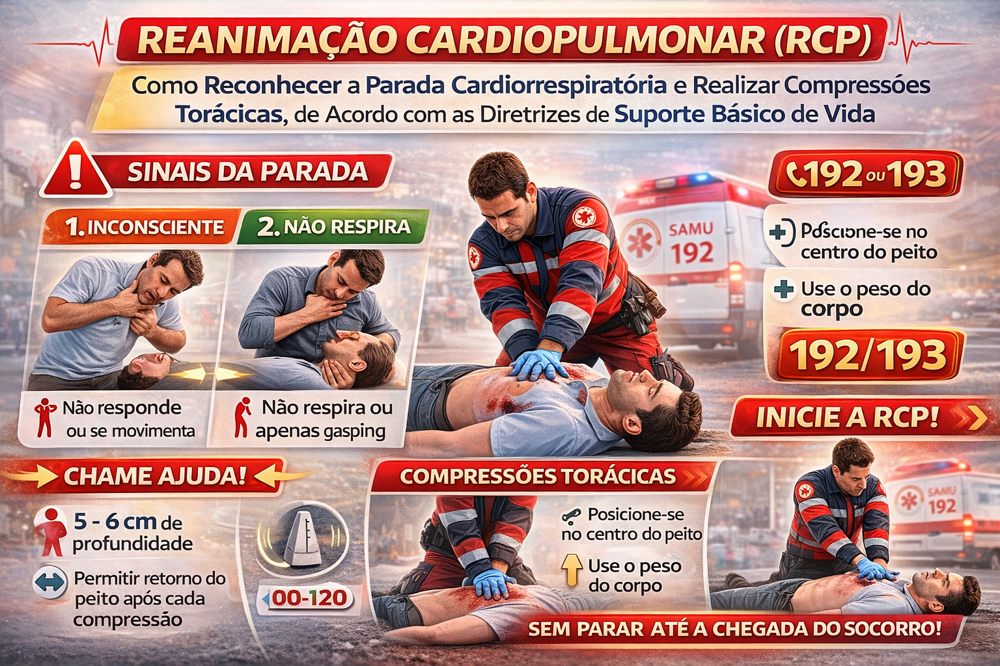

O que é a parada cardiorrespiratória?
A parada cardiorrespiratória (PCR) ocorre quando a circulação efetiva cessa. O reconhecimento rápido, o acionamento do serviço de emergência, a RCP de qualidade e o uso precoce do DEA aumentam a chance de sobrevivência.

Reconhecimento da PCR — equipe escolar treinada
- Vítima inconsciente, sem resposta.
- Ausência de respiração normal ou presença apenas de gasping (respiração agônica).
Para o primeiro respondente não profissional de saúde, não se deve atrasar a RCP procurando pulso. Se a pessoa não responde e não respira normalmente, acione o SAMU (192), peça um DEA e inicie a RCP.
Adulto e adolescente pós-puberdade
- Coloque a vítima de costas sobre superfície firme.
- Posicione as mãos no centro do tórax, na metade inferior do esterno.
- Comprima a 100 a 120 vezes por minuto, com profundidade de aproximadamente 5 a 6 cm, permitindo retorno completo do tórax.
- Se treinado para ventilar, realize 30 compressões para 2 ventilações.
- Se não puder ou não se sentir seguro para ventilar, faça compressões contínuas até o DEA ou a equipe especializada assumir.
- Quando houver mais de um socorrista, reveze quem comprime aproximadamente a cada 2 minutos, se possível.
Criança — aproximadamente 1 ano até a puberdade
- Compressões a 100 a 120 por minuto.
- Profundidade de pelo menos 1/3 da espessura do tórax, aproximadamente 5 cm.
- Um socorrista treinado: 30:2.
- Dois socorristas treinados: 15:2.
- As ventilações são especialmente importantes nas paradas pediátricas; se não for possível ventilar, faça compressões em vez de não realizar RCP.
Uso do desfibrilador externo automático (DEA)
- Ligue o DEA e siga as instruções de voz.
- Exponha o tórax e coloque as pás conforme o desenho do equipamento.
- Afaste todos durante a análise e durante eventual choque.
- Retome a RCP imediatamente quando o DEA orientar.
- Em crianças, use pás/atenuador pediátrico quando disponíveis e indicados pelo fabricante, sem atrasar a desfibrilação.
O que não fazer
- Não atrasar o início das compressões procurando pulso.
- Não fazer pausas desnecessárias nas compressões.
- Não tocar na vítima durante análise ou choque do DEA.
- Não abandonar a vítima após acionar o serviço de emergência.
Referências de atualização: SAMU 192 São Paulo — Suporte Básico de Vida (2026); American Heart Association — 2025 Guidelines for CPR and ECC.